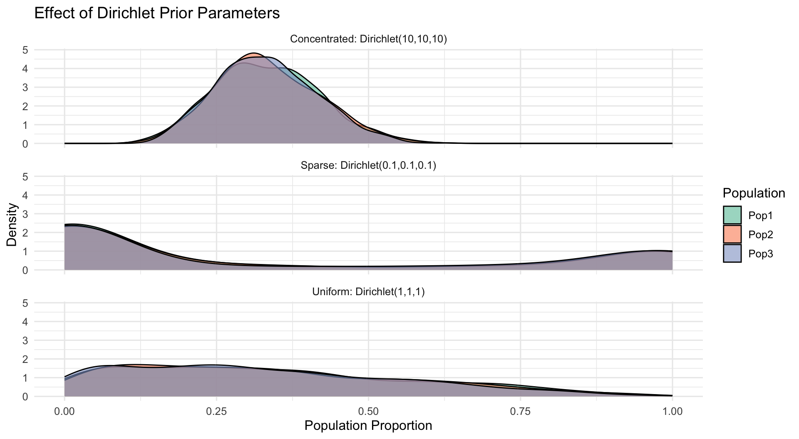
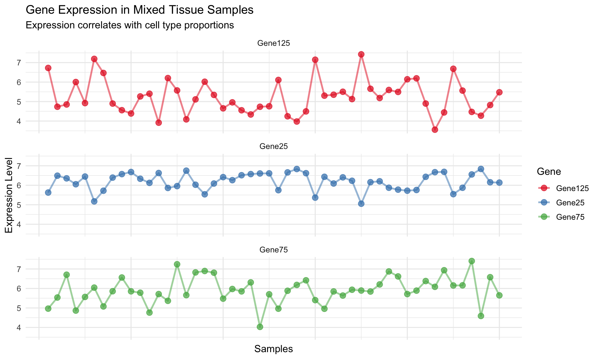
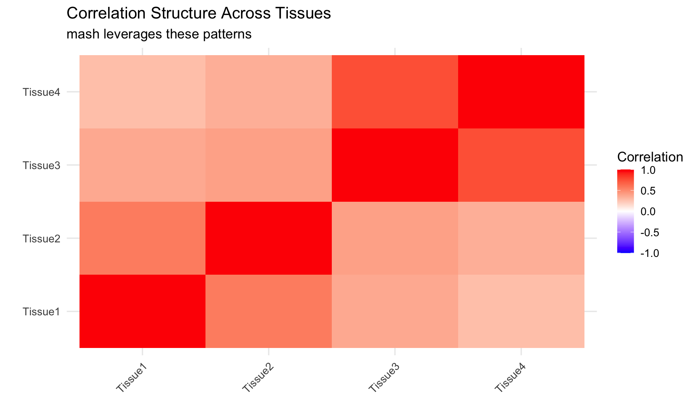
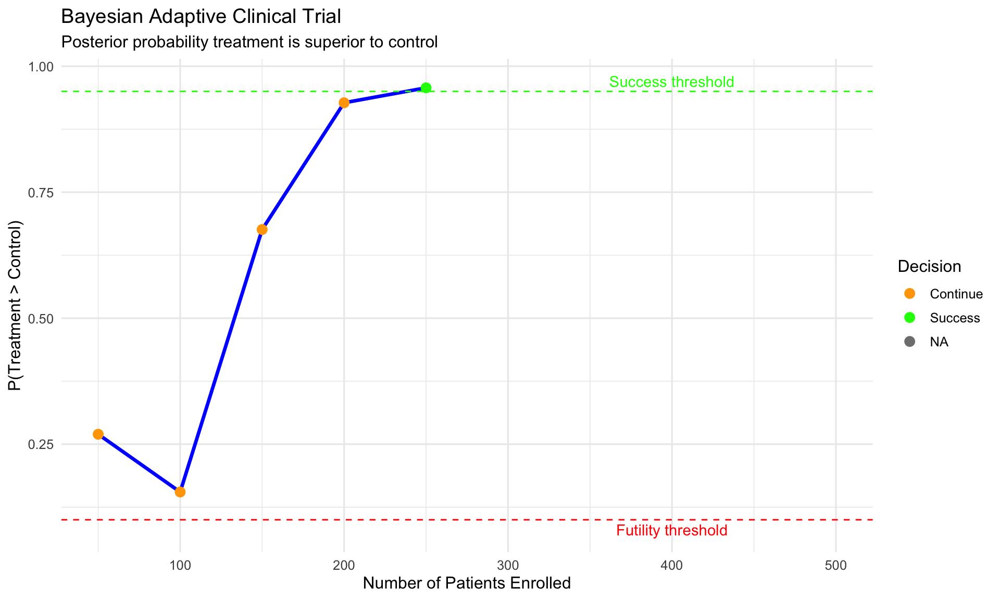
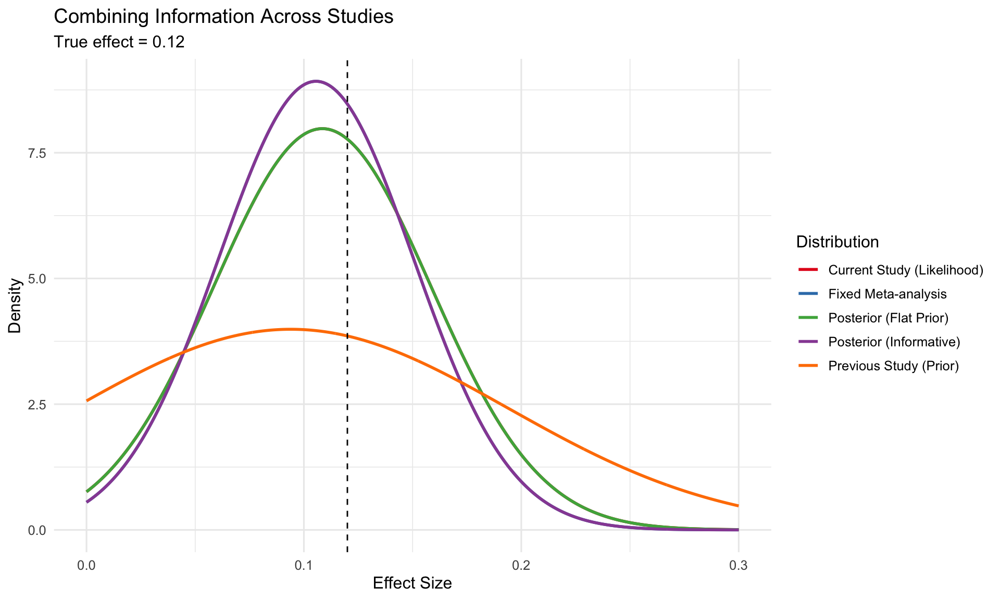

Prior on allele frequencies: Dirichlet(α₁, α₂, …, αᵦ)
Data: Observed allele counts in that population
Posterior: Updated Dirichlet with added counts
For each individual i:
Prior on population membership: Dirichlet(λ₁, λ₂, …, λₖ)
Data: Genotype information across loci
Posterior: Updated admixture proportions
Why conjugacy matters: Enables efficient Gibbs sampling in the MCMC algorithm - essential for making STRUCTURE computationally feasible
Dirichlet Prior Parameters Matter
Code
library(tidyr)# Function to sample from a Dirichlet distributionrdirichlet <-function(n, alpha) { k <-length(alpha) r <-matrix(rgamma(n*k, shape=alpha, rate=1), ncol=k, byrow=TRUE) r <- r /rowSums(r)return(r)}# Sample from different Dirichlet priorsset.seed(123)n_samples <-1000# Very small alpha (sparse)alpha_small <-c(0.1, 0.1, 0.1) samples_small <-rdirichlet(n_samples, alpha_small)# Unity alpha (uniform)alpha_unity <-c(1, 1, 1)samples_unity <-rdirichlet(n_samples, alpha_unity)# Large alpha (concentrated)alpha_large <-c(10, 10, 10) samples_large <-rdirichlet(n_samples, alpha_large)# Create data framesdf_small <-as.data.frame(samples_small)df_small$prior <-"Sparse: Dirichlet(0.1,0.1,0.1)"names(df_small)[1:3] <-c("Pop1", "Pop2", "Pop3")df_unity <-as.data.frame(samples_unity)df_unity$prior <-"Uniform: Dirichlet(1,1,1)"names(df_unity)[1:3] <-c("Pop1", "Pop2", "Pop3")df_large <-as.data.frame(samples_large)df_large$prior <-"Concentrated: Dirichlet(10,10,10)"names(df_large)[1:3] <-c("Pop1", "Pop2", "Pop3")# Combine datadf_all <-rbind(df_small, df_unity, df_large)# Convert to long format for ggplotdf_long <- df_all %>%pivot_longer(cols =c("Pop1", "Pop2", "Pop3"), names_to ="Population", values_to ="Proportion")# Create ggplotggplot(df_long, aes(x = Proportion, fill = Population)) +geom_density(alpha =0.6) +facet_wrap(~ prior, ncol =1) +theme_minimal(base_size =12) +labs(title ="Effect of Dirichlet Prior Parameters",x ="Population Proportion",y ="Density" ) +scale_fill_brewer(palette ="Set2")

Interpreting the priors:
Sparse prior: Favors solutions where each individual belongs to mostly one population
Uniform prior: No preference for admixture level
Concentrated prior: Favors solutions where individuals have similar proportions of each ancestry
In STRUCTURE: - For population allele frequencies, typically use small α (0.1-1) - For admixture proportions, λ controls expected admixture level
Mixture Models in Genomics
Mixture Models: The Concept
A mixture model assumes data comes from multiple distinct distributions:
\[ p(x) = \sum_{k=1}^K \pi_k f_k(x|\theta_k) \]
Where: - \(\pi_k\) are the mixing weights (\(\sum \pi_k = 1\)) - \(f_k\) are the component distributions - \(\theta_k\) are the parameters of each component
Key genomic applications: - Cell type deconvolution - Population structure (STRUCTURE) - Gene expression clustering - QTL effect sharing across tissues (mash)
EM Algorithm: The Workhorse
The EM algorithm iteratively:
E-step: Calculate responsibilities (posterior probability each data point comes from each component) \[\gamma_{ik} = \frac{\pi_k f_k(x_i|\theta_k)}{\sum_j \pi_j f_j(x_i|\theta_j)}\]
M-step: Update parameters using weighted data \[\pi_k^{new} = \frac{1}{n}\sum_{i=1}^n \gamma_{ik}\]\[\theta_k^{new} = \arg\max_{\theta_k} \sum_{i=1}^n \gamma_{ik} \log f_k(x_i|\theta_k)\]
Mixture model interpretation: - Each cell type has a distinct expression profile - Observed expression is a weighted sum of profiles - Weights = cell type proportions
Components: - \(f_k(x|\theta_k)\) = Expression profile of cell type k - \(\pi_k\) = Proportion of cell type k in sample
Code
# Simulate gene expression data for deconvolutionset.seed(123)n_genes <-500n_cell_types <-3n_samples <-50# True cell type proportions for each samplecell_props <-matrix(runif(n_samples * n_cell_types), ncol = n_cell_types)cell_props <- cell_props /rowSums(cell_props)colnames(cell_props) <-c("CellType1", "CellType2", "CellType3")# True expression profiles for each cell typecell_profiles <-matrix(rnorm(n_genes * n_cell_types, mean =5, sd =1), nrow = n_genes)# Make some genes specific to cell typescell_profiles[1:50, 1] <- cell_profiles[1:50, 1] +3# Cell type 1 markerscell_profiles[51:100, 2] <- cell_profiles[51:100, 2] +3# Cell type 2 markerscell_profiles[101:150, 3] <- cell_profiles[101:150, 3] +3# Cell type 3 markers# Generate mixed samplesmixed_expression <-matrix(0, nrow = n_genes, ncol = n_samples)for (i in1:n_samples) { mixed_expression[, i] <- cell_profiles %*% cell_props[i, ] +rnorm(n_genes, 0, 0.1) # Add noise}# Create heatmap dataexample_genes <-c(25, 75, 125) # Marker genes for each cell typeexample_data <-data.frame(Gene =rep(paste0("Gene", example_genes), each = n_samples),Sample =rep(1:n_samples, times =length(example_genes)),Expression =c(mixed_expression[example_genes[1], ], mixed_expression[example_genes[2], ], mixed_expression[example_genes[3], ]))# Add cell type proportions to the datafor (i in1:n_cell_types) { example_data[[paste0("Prop", i)]] <-rep(cell_props[, i], times =length(example_genes))}# Create plotggplot(example_data, aes(x = Sample, y = Expression, color = Gene)) +geom_point(size =3, alpha =0.7) +geom_line(size =1, alpha =0.5) +theme_minimal(base_size =12) +theme(axis.text.x =element_blank()) +labs(title ="Gene Expression in Mixed Tissue Samples",subtitle ="Expression correlates with cell type proportions",x ="Samples",y ="Expression Level" ) +scale_color_brewer(palette ="Set1") +facet_wrap(~ Gene, ncol =1)

Mixture Models: mash Approach
The mash method (Urbut, Stephens, et al.) uses mixture models to share information across conditions:
Key components:
Component distributions: Different patterns of effects across tissues/conditions
Shared effects
Tissue-specific effects
Correlated tissues effects
Mixture weights: Learned from data, revealing which patterns are common
Result: Improved effect estimates by borrowing strength appropriately
Code
# Simulate mash-like data for visualizationset.seed(456)n_effects <-200n_tissues <-4# Create different effect patterns for visualizationeffect_patterns <-list("Shared"=rep(1, n_tissues),"Tissue1_specific"=c(1, 0, 0, 0),"Tissue2_specific"=c(0, 1, 0, 0),"Tissues_1_2"=c(1, 1, 0, 0),"Tissues_3_4"=c(0, 0, 1, 1))# Create matrix to store true effectstrue_effects <-matrix(0, nrow = n_effects, ncol = n_tissues)colnames(true_effects) <-paste0("Tissue", 1:n_tissues)# Assign effects based on patternsn_shared <-50n_pattern <- (n_effects - n_shared) / (length(effect_patterns) -1)for (i in1:n_shared) { effect_size <-rnorm(1, 0, 0.5) true_effects[i, ] <- effect_patterns[[1]] * effect_size}current_idx <- n_shared +1for (p in2:length(effect_patterns)) {for (i in1:n_pattern) { effect_size <-rnorm(1, 0, 0.5) true_effects[current_idx, ] <- effect_patterns[[p]] * effect_size current_idx <- current_idx +1 }}# Create observed data with noiseobserved_effects <- true_effects +matrix(rnorm(n_effects * n_tissues, 0, 0.2),nrow = n_effects)# Prepare data for plotting correlation structurecorrelation_matrix <-cor(observed_effects)# Convert correlation matrix to long format for plottingcorr_data <-expand.grid(Tissue1 =colnames(correlation_matrix),Tissue2 =colnames(correlation_matrix))corr_data$Correlation <-c(correlation_matrix)# Create heatmapggplot(corr_data, aes(x = Tissue1, y = Tissue2, fill = Correlation)) +geom_tile() +scale_fill_gradient2(low ="blue", mid ="white", high ="red",midpoint =0, limits =c(-1, 1)) +theme_minimal(base_size =14) +theme(axis.text.x =element_text(angle =45, hjust =1)) +labs(title ="Correlation Structure Across Tissues",subtitle ="mash leverages these patterns",x ="",y ="" )

Key insight: mash automatically learns which patterns of sharing are common and uses this to improve effect estimates
Bayesian Clinical & Adaptive Designs
Adaptive Designs: Learn As You Go
Traditional approach: Fixed design, analyze only at end
Bayesian adaptive approach: Update and adjust as data accumulates
Key advantages in genomics: - Focus resources on promising candidates - Stop early when evidence is compelling - Adjust study parameters based on interim results
Adaptive Clinical Trial Example
Traditional vs. Adaptive:
Traditional: Fixed number of patients in treatment & control
Adaptive:
Start with small groups
Calculate P(treatment > control)
If high probability, assign more patients to treatment
If low probability, stop for futility
Code
library(ggplot2)# Simulate adaptive trialset.seed(42)# True treatment effecttrue_effect <-0.12# 12% improvement# Trial parametersmax_patients <-500interims <-seq(50, max_patients, by =50)success_threshold <-0.95# Probability treatment is betterfutility_threshold <-0.1# Probability treatment is better# Prior for control rate: Beta(10, 40) - centered around 20%prior_alpha_control <-10prior_beta_control <-40# Prior for treatment rate: Same as control (skeptical)prior_alpha_treatment <-10prior_beta_treatment <-40# Calculate posterior probability of superiority through trialcalc_prob_superior <-function(control_a, control_b, treat_a, treat_b, n_samples =10000) {# Monte Carlo estimation control_samples <-rbeta(n_samples, control_a, control_b) treat_samples <-rbeta(n_samples, treat_a, treat_b)mean(treat_samples > control_samples)}# Simulate adaptive trialtrial_data <-data.frame(Patients = interims,ProbSuperior =NA,ControlRate =NA,TreatmentRate =NA,Decision =NA)# Simulate control and treatment outcomescontrol_results <-rbinom(max_patients, 1, 0.2) # 20% success ratetreat_results <-rbinom(max_patients, 1, 0.2+ true_effect) # 32% success ratefor (i in1:length(interims)) { n <- interims[i]# Current data current_control <- control_results[1:n/2] # Half in control current_treat <- treat_results[1:n/2] # Half in treatment# Update posteriors post_alpha_control <- prior_alpha_control +sum(current_control) post_beta_control <- prior_beta_control +length(current_control) -sum(current_control) post_alpha_treat <- prior_alpha_treatment +sum(current_treat) post_beta_treat <- prior_beta_treatment +length(current_treat) -sum(current_treat)# Calculate probability of superiority prob_superior <-calc_prob_superior( post_alpha_control, post_beta_control, post_alpha_treat, post_beta_treat )# Record results trial_data$ProbSuperior[i] <- prob_superior trial_data$ControlRate[i] <- post_alpha_control / (post_alpha_control + post_beta_control) trial_data$TreatmentRate[i] <- post_alpha_treat / (post_alpha_treat + post_beta_treat)# Make decisionif (prob_superior >= success_threshold) { trial_data$Decision[i] <-"Success"if (i <length(interims)) { trial_data$Decision[(i+1):length(interims)] <-NA }break } elseif (prob_superior <= futility_threshold) { trial_data$Decision[i] <-"Futility"if (i <length(interims)) { trial_data$Decision[(i+1):length(interims)] <-NA }break } else { trial_data$Decision[i] <-"Continue" }}# Create plotggplot(trial_data, aes(x = Patients, y = ProbSuperior)) +geom_line(size =1.2, color ="blue") +geom_point(size =3, aes(color = Decision)) +geom_hline(yintercept = success_threshold, linetype ="dashed", color ="green") +geom_hline(yintercept = futility_threshold, linetype ="dashed", color ="red") +annotate("text", x = max_patients *0.8, y = success_threshold +0.02, label ="Success threshold", color ="green") +annotate("text", x = max_patients *0.8, y = futility_threshold -0.02, label ="Futility threshold", color ="red") +scale_color_manual(values =c("Continue"="orange", "Success"="green", "Futility"="red")) +theme_minimal(base_size =12) +labs(title ="Bayesian Adaptive Clinical Trial",subtitle ="Posterior probability treatment is superior to control",x ="Number of Patients Enrolled",y ="P(Treatment > Control)" )

Population Genomics Applications
Adaptive sequencing designs:
Candidate gene sequencing:
Sequence initial set of genes in a subset of samples
Calculate posterior probability of association for each gene
Focus remaining resources on promising genes
Add related genes based on pathway analysis
Exome-to-genome expansion:
Start with exome sequencing in all samples
For variants with high posterior probability, sequence surrounding regions
Iteratively expand to full genome in regions of interest
Sample size re-estimation:
Update power calculations based on observed effect sizes
Increase sample size only where needed
Using Informative Priors from Previous Studies
Combining data across studies:
Previous study as prior:
Convert previous results to Beta/Normal prior
Current study provides likelihood
Posterior combines both sources
Meta-analysis alternative:
Each study analyzed separately
Results combined at the end
Less efficient use of information
Code
# Demonstrate using previous study as priorset.seed(123)# Previous study data (small study)prev_n <-50prev_effect <-0.15prev_se <-0.1# Current study (larger)current_n <-200true_effect <-0.12current_se <-0.05# Simulate observed effectsprev_observed <-rnorm(1, prev_effect, prev_se)current_observed <-rnorm(1, true_effect, current_se)# Approaches to combine:# 1. Flat prior + current data onlyflat_prior_mean <-0flat_prior_sd <-10# Very diffuse# 2. Using previous study as priorinformative_prior_mean <- prev_observedinformative_prior_sd <- prev_se# Calculate posteriors# Flat priorflat_posterior_precision <-1/flat_prior_sd^2+1/current_se^2flat_posterior_sd <-sqrt(1/flat_posterior_precision)flat_posterior_mean <- (flat_prior_mean/flat_prior_sd^2+ current_observed/current_se^2) / flat_posterior_precision# Informative priorinf_posterior_precision <-1/informative_prior_sd^2+1/current_se^2inf_posterior_sd <-sqrt(1/inf_posterior_precision)inf_posterior_mean <- (informative_prior_mean/informative_prior_sd^2+ current_observed/current_se^2) / inf_posterior_precision# 3. Fixed meta-analysis (inverse variance weighted)meta_weight_prev <-1/prev_se^2meta_weight_current <-1/current_se^2meta_mean <- (meta_weight_prev * prev_observed + meta_weight_current * current_observed) / (meta_weight_prev + meta_weight_current)meta_se <-sqrt(1/(meta_weight_prev + meta_weight_current))# Plot the resultsx_range <-seq(0, 0.3, length.out =1000)prior_density <-dnorm(x_range, informative_prior_mean, informative_prior_sd)likelihood_density <-dnorm(x_range, current_observed, current_se)flat_posterior_density <-dnorm(x_range, flat_posterior_mean, flat_posterior_sd)inf_posterior_density <-dnorm(x_range, inf_posterior_mean, inf_posterior_sd)meta_density <-dnorm(x_range, meta_mean, meta_se)plot_data <-data.frame(x =rep(x_range, 5),y =c(prior_density, likelihood_density, flat_posterior_density, inf_posterior_density, meta_density),Distribution =factor(rep(c("Previous Study (Prior)", "Current Study (Likelihood)", "Posterior (Flat Prior)", "Posterior (Informative)", "Fixed Meta-analysis"), each =length(x_range))))# Plotggplot(plot_data, aes(x = x, y = y, color = Distribution)) +geom_line(size =1) +geom_vline(xintercept = true_effect, linetype ="dashed", color ="black") +theme_minimal(base_size =12) +scale_color_brewer(palette ="Set1") +labs(title ="Combining Information Across Studies",subtitle =paste("True effect =", true_effect),x ="Effect Size",y ="Density" )

Bayesian FDR Control in GWAS
Traditional FDR: - Sort p-values - Apply B-H procedure - Control expected proportion of false discoveries
Bayesian FDR: - Calculate posterior probability of association for each variant - Sort by posterior probability - Include variants until expected FDR reaches threshold
Books & Articles: - “Statistical Rethinking” by McElreath - “Bayesian Data Analysis” by Gelman et al. - Five Minute Statistics: http://stephens999.github.io/fiveMinuteStats/ - Urbut et al. “Flexible statistical methods for estimating and testing effects in genomic studies with multiple conditions” (2019)